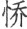

陈那五比丘即从座起，顶礼佛足而白佛言：“我在鹿苑及于鸡园，观见如来，最初成道，于佛音声悟明四谛。佛问比丘，我初称解，如来印我名阿若多。妙音密圆，我于音声得阿罗汉。佛问圆通，如我所证，音声为上。”
陈那五比丘即从座起，顶礼佛足而白佛言：“我在鹿苑及于鸡园，观见如来，最初成道，于佛音声悟明四谛。佛问比丘，我初称解，如来印我名阿若多。妙音密圆，我于音声得阿罗汉。佛问圆通，如我所证，音声为上。”本卷继续讨论六根之结、解。首先由十方诸佛共同宣说：轮转生死结根，唯在六根；证得菩提涅槃，也在六根。也就是说，六根是令众生流转生死以及解脱证果之关键。为什么呢？佛陀开示阿难说：六根、六尘同一根源，结缚、解脱本源无二，故举根即摄尘、识。接着，佛陀以华巾依次绾成六个结为例，以六结比喻六根，向大众讲说了“解结因次第，六解一亦亡”之理。众生从真起妄，由同一根元而妄有六结，解结之时也须次第而解；初解三结证人空，次解二结证法空，最后解第一结而证无生法忍。同时，解结当从“结心”开始，比喻选择六根中最圆通之根，一门深入，随拔一根，六根解脱。对于六结次第，诸注疏又以“动结、静结、根结、觉结、空结、灭结”作了详细解释。
随后阿难又请问何根是圆通本根，佛陀即请会中的大菩萨和大阿罗汉们说说自己最初成道的方便因缘及所选择的圆通法门，于是有二十五位圣者宣说了初发心时依何方便法而获圆通，即是本经著名的二十五圆通法门。“二十五”由六根、六尘、六识等十八界再加七大组成，各有一位圣者因之悟道。二十五圆通法门的宣说次第，以“声尘圆通”居先，“耳根圆通”殿后，这暗示了本经二十五圆通法门中，以选择耳根圆通法门最为当机。
又第二十四大势至菩萨根大圆通所讲说的念佛法门，是宋代之后净土宗的普遍流行法门，这段经文也以《大势至菩萨念佛圆通章》为题而成为净土宗的重要经典。
阿难白佛言：“世尊，如来虽说第二义门，今观世间解结之人，若不知其所结之元，我信是人终不能解。世尊，我及会中有学声闻亦复如是，从无始际与诸无明俱灭俱生，虽得如是多闻善根，名为出家，犹隔日疟 (1) 。唯愿大慈，哀愍沦溺，今日身心云何是结？从何名解？亦令未来苦难众生得免轮回，不落三有。”作是语已，普及大众五体投地，雨泪翘诚 (2) ，伫佛如来无上开示。
注释：
(1) 疟（nüè）：病名，疟疾。
(2) 翘诚：犹虔诚。
译文：
阿难对佛说：“世尊，如来虽已宣说第二决定义门，但现在观察世间解结之人，如果不知道结的根源，我相信这人终不能解开此结。世尊，我及会中的有学声闻也是如此，从无始以来即与诸无明俱生俱灭，虽然有这个多闻的善根，名为出家，但如同隔日就复发的疟疾一样，暂似解脱，依然被缚，未得究竟解脱。唯愿佛以大慈悲心哀悯沉沦众生，为我们指示现在身心中何处是结？从何处下手解结？也使未来世的苦难众生得免生死轮回，不落三界六道。”说完这些话，阿难与大众五体投地，悲感垂泪，虔诚期待如来的无上开示。
尔时世尊，怜愍阿难及诸会中诸有学者，亦为未来一切众生为出世因，作将来眼；以阎浮檀紫金光手摩阿难顶。即时十方普佛世界六种震动，微尘如来住世界者，各有宝光从其顶出，其光同时于彼世界来祇陀林，灌如来顶。是诸大众，得未曾有。
译文：
这时世尊，怜悯阿难及会中的有学位弟子，也为未来世一切众生开示修证出世的因地心，作将来修行大乘的眼目；佛即用阎浮檀紫金光手摩阿难的头顶。就在这时，十方所有的佛世界都发生六种震动，微尘数的如来住于其佛国中，各有宝光从头顶发出，这些宝光从各佛国同时照射到祇陀林，灌释迦如来之顶。会中大众得见如此殊胜的景象，真是从未有过。
于是阿难及诸大众，俱闻十方微尘如来异口同音告阿难言：“善哉，阿难！汝欲识知俱生无明，使汝轮转，生死结根，唯汝六根，更无他物。汝复欲知无上菩提，令汝速证安乐解脱、寂静、妙常，亦汝六根，更非他物。”阿难虽闻如是法音，心犹未明，稽首白佛：“云何令我生死轮回、安乐妙常，同是六根，更非他物？”佛告阿难：“根、尘同源，缚、脱无二，识性虚妄，犹如空华。阿难，由尘发知，因根有相，相、见无性，同于交芦 (1) 。是故汝今知见立知，即无明本；知见无见，斯即涅槃、无漏真净，云何是中更容他物？”
注释：
(1) 交芦：相交而立的束芦。芦是植物名，即芦苇。
译文：
这时，阿难及会中大众都听到十方微尘数的如来异口同声告诉阿难：“善哉，阿难！你想识知俱生无明，使你轮回流转，生死结的根元，唯是你的六根，更无他物。你还想识知无上菩提，使你速证安乐、解脱、寂静、妙常之无余涅槃，也是你的六根，更不是他物。”阿难虽然听了如此法音，心中仍然未能明白，顶礼佛陀说：“为什么令我生死轮回和安乐解脱的，同样是六根，更不是他物呢？”佛告诉阿难：“六根、六尘同一根源，结缚、解脱本源无二，识性本来虚妄，犹如空中幻花。阿难，由于六尘而发起六根知见，因六根知见而显六尘之相，六尘相分与六根知见都没有独立的自体性，相互依存，就像相交而立的束芦一样。所以你现在，于本性本明的真知见上更立六根分别知见，此即是无明的根本；若了知六根知见虚妄不实、本来无见，此即是无上涅槃的无漏真净境界，怎么还能说在六根根源之中容有他物呢？”
尔时，世尊欲重宣此义而说偈言：
真性有为空，缘生故如幻；
无为无起灭，不实如空华。
言妄显诸真，妄真同二妄；
犹非真非真，云何见所见？
中间无实性，是故若交芦；
结解同所因，圣凡无二路。
汝观交中性，空有二俱非；
迷晦即无明，发明便解脱。
解结因次第，六解一亦亡；
根选择圆通，入流成正觉。
陀那微细识，习气成暴流；
真非真恐迷，我常不开演。
自心取自心，非幻成幻法；
不取无非幻，非幻尚不生，
幻法云何立？是名妙莲华，
金刚王宝觉；如幻三摩提，
弹指超无学。此阿毗达磨，
十方薄伽梵，一路涅槃门。
于是，阿难及诸大众闻佛如来无上慈诲，祇夜、伽陀 (1) ，杂糅精莹，妙理清彻，心目开明，叹未曾有。
注释：
(1) 祇夜：十二部经之一。旧译为“重颂”、“重颂偈”。新译为“应颂”。伽陀：十二部经之一。意为偈颂。
译文：
这时，世尊为了重复解释此意而说偈颂：
真性有为空，缘生故如幻；
无为无起灭，不实如空华。
言妄显诸真，妄真同二妄；
犹非真非真，云何见所见？
中间无实性，是故若交芦；
结解同所因，圣凡无二路。
汝观交中性，空有二俱非；
迷晦即无明，发明便解脱。
解结因次第，六解一亦亡；
根选择圆通，入流成正觉。
陀那微细识，习气成暴流；
真非真恐迷，我常不开演。
自心取自心，非幻成幻法；
不取无非幻，非幻尚不生，
幻法云何立？是名妙莲华，
金刚王宝觉；如幻三摩提，
弹指超无学。此阿毗达磨，
十方薄伽梵，一路涅槃门。
于是，阿难及大众听闻了佛的无上慈悲教诲，以及糅合精义的重颂总结，都感到文句精彩而莹明，义理清楚透彻，大众心眼洞开，感叹得到未曾有的法音。
阿难合掌顶礼白佛：“我今闻佛无遮大悲，性净妙常真实法句，心犹未达六解一亡舒结伦次。惟垂大慈，再愍斯会及与将来，施以法音，洗涤沉垢。”
译文：
阿难合掌向佛顶礼并对佛说：“我今日听闻佛以无遮大悲心所演说的性净妙常真实法句，但心中仍未明了六解一亡的解结次第。唯愿如来普施大慈，再次悯念此会大众以及未来世的众生，施以甘露法音，以洗涤我们心中的沉垢。”
即时，如来于师子座，整涅槃僧 (1) ，敛僧伽梨 (2) ，揽七宝几，引手于几，取劫波罗天所奉华巾 (3) ，于大众前绾成一结，示阿难言：“此名何等？”阿难、大众俱白佛言：“此名为结。”于是如来绾叠华巾又成一结，重问阿难：“此名何等？”阿难、大众又白佛言：“此亦名结。”如是伦次绾叠华巾，总成六结。一一结成，皆取手中所成之结，持问阿难：“此名何等？”阿难、大众亦复如是次第酬佛：“此名为结。”佛告阿难：“我初绾巾，汝名为结。此叠华巾先实一条，第二、第三，云何汝曹复名为结？”阿难白佛言：“世尊，此宝叠华，缉绩成巾 (4) ，虽本一体，如我思惟：如来一绾，得一结名；若百绾成，终名百结；何况此巾只有六结，终不至七，亦不停五。云何如来只许初时，第二、第三，不名为结？”
注释：
(1) 涅槃僧：意译作“裙”。十三资具衣之一。
(2) 僧伽梨：为三衣之一，即九条以上之衣，为外出及其他庄严仪式时着之。
(3) 劫波罗天：意为时分天。
(4) 缉绩：缉，指析麻捻接成线。绩，指缉麻。
译文：
此时，如来在狮子座上整理好裙衣，敛了敛袈裟，把七宝几案拉至座前，伸手拿起放在几案上的劫波罗天所奉献的叠华巾，在大众中将华巾绾了一个结，拿给阿难看，问道：“这个叫什么？”阿难及大众都回答说：“这个叫结。”于是，佛接着绾叠华巾又成一结，又问阿难：“这个叫什么？”阿难及大众又回答说：“这个也叫结。”佛这样依次绾叠华巾，总共绾成六个结。每绾成一个结，佛都拿着手中绾好的结问阿难：“这个叫什么？”阿难及大众也是这样依次回答佛：“这个叫结。”佛告诉阿难：“我第一次绾巾，你叫它结。这个叠华巾最初其实只是一条，第二次、第三次绾结后，为何你们仍然叫它结呢？”阿难回答说：“世尊，这个宝叠华巾是织绩而成，虽然本是一条，但我这样想：如来绾一次，得名一个结；如果绾一百次，最后称为一百结；何况此巾现在只有六个结，没到七个，也没停在五个。为什么如来只许可初次所绾的叫作结，第二次、第三次等所绾的就不叫作结呢？”
佛告阿难：“此宝华巾，汝知此巾元止一条，我六绾时，名有六结。汝审观察：巾体是同，因结有异？于意云何？初绾结成，名为第一；如是乃至第六结生，吾今欲将第六结名，成第一不？”“不也，世尊。六结若存，斯第六名，终非第一。纵我历生尽其明辩，如何令是六结乱名？”佛言：“如是！六结不同，循顾本因，一巾所造，令其杂乱，终不得成。则汝六根，亦复如是：毕竟同中，生毕竟异。”
译文：
佛告诉阿难：“此宝花巾，如你所知，原本只是一条，我绾了六次，即名为有六个结。你仔细观察：巾体本是同一个，是否因绾了结而巾体有所差异呢？你的意思如何呢？初次绾成的结，称为第一结；这样依次绾结到第六结绾成，我现在想把第六结称为第一结，可以吗？”阿难说：“不行，世尊。六结若都存在，这第六结的名称终不是第一结。纵然竭尽我历生的聪明辩才，怎么能使这六结的名称错乱呢？”佛说：“是这样！六结虽然不同，追溯其本因，原是一巾所成，想使其名称杂乱，终究也不可能成立。你现在的六根，也是如此：于一相尚不得的毕竟同体性中，而生出毕竟异的六相根境。”
佛告阿难：“汝必嫌此六结不成，愿乐一成，复云何得？”阿难言：“此结若存，是非蜂起 (1) ，于中自生，此结非彼，彼结非此。如来今日，若总解除，结若不生，则无彼此，尚不名一，六云何成？”佛言：“六解一亡，亦复如是。由汝无始心性狂乱，知见妄发，发妄不息，劳见发尘。如劳目睛，则有狂华，于湛精明无因乱起。一切世间，山河大地、生死、涅槃，皆即狂劳颠倒华相。”
注释：
(1) 锋起：指争论纷然，如兵戈竞斗。
译文：
佛接着说：“你一定嫌此六结各异，不欲其成，而乐意依然成为一巾，又怎样才能得到呢？”阿难说：“六结如果同时存在，则是非蜂起，其中自然就会产生此结不是彼结、彼结不是此结等争论。如来现在如果把所有的结都解除，结没有了，就没有彼此的区分，一结的名称尚且不可得，六结的名目又怎么能成立呢？”佛说：“六解一亡，也是这样的道理。由于你无始以来心性狂乱，即真心妙性中横起无明狂惑扰乱，随起业识，转为见分，而产生虚妄的知见，妄执心外诸法，相续不断，知见妄执劳虑转深，妄生尘相。譬如瞪眼盯视空中，眼睛疲劳而在湛净清明的虚空中看见狂花幻相，无因乱起。一切世间诸相，无情之山河大地，有情之生死、涅槃，都是狂心劳病所见的虚妄颠倒的空花之相。”
阿难言：“此劳同结，云何解除？”如来以手将所结巾偏掣其左 (1) ，问阿难言：“如是解不？”“不也，世尊。”旋复以手偏牵右边，又问阿难：“如是解不？”“不也，世尊。”佛告阿难：“吾今以手左右各牵，竟不能解。汝设方便，云何解成？”阿难白佛言：“世尊，当于结心，解即分散。”
注释：
(1) 掣（chè）：牵曳，牵引。
译文：
阿难说：“此狂劳同根结，应怎么解除呢？”如来用手将所绾结的花巾偏掣左边，问阿难：“这样能解开吗？”阿难说：“不能，世尊。”随后佛又用手偏掣花巾的右边，问阿难：“这样能解开吗？”阿难说：“不能，世尊。”佛告诉阿难：“我现在用手各从左右牵拉，竟然都不能解开。你想一个办法，怎样才能成功解开？”阿难回答佛说：“世尊，应当从结的中心去解，这样结就散开了。”
佛告阿难：“如是，如是。若欲除结，当于结心。阿难，我说佛法从因缘生，非取世间和合粗相；如来发明世、出世法，知其本因，随所缘出；如是乃至恒沙界外一滴之雨，亦知头数。现前种种，松直、棘曲，鹄白、乌玄 (1) ，皆了元由。是故，阿难，随汝心中选择六根，根结若除，尘相自灭，诸妄销亡，不真何待！”
注释：
(1) 鹄（hú）白：鹄，通称天鹅，往往呈白色。乌玄：指乌鸦，往往呈黑色。
译文：
佛告诉阿难：“是这样，是这样。如想解结，当从结心入手。阿难，我说佛法从因缘生，不过，此因缘并不取世间四大和合而成种种境相的粗因缘，而是以不生灭性为因，次第解结修证，还归本源心地的出世间法的细因缘；如来阐明世间法、出世间法，了知其所依之如来藏妙真如心的究竟本因，随其所遇因缘而出生染净十界诸法；这样即便是恒河沙世界之外遥远的天空中所下一滴一滴的雨水，也能知道其数量。现前的种种境相，如松树为什么是直的，荆棘为什么是弯曲的，天鹅为什么是白的，乌鸦为什么是黑的等，如来都了知其本末缘由。所以，阿难，随你心中详察，选择六根中的圆通根而一门深入，根结若解开，尘相自然息灭，妄想也都消亡，妄尽真显，不证得真如妙心，更有何待！”
“阿难，吾今问汝，此劫波罗巾六结现前，同时解萦 (1) ，得同除不？”“不也，世尊。是结本以次第绾生，今日当须次第而解。六结同体，结不同时，则结解时，云何同除？”佛言：“六根解除，亦复如是。此根初解，先得人空；空性圆明，成法解脱；解脱法已，俱空不生；是名菩萨从三摩地得无生忍。”
注释：
(1) 萦（yínɡ）：回旋缠绕。
译文：
佛问阿难道：“阿难，我现在问你，此劫波罗巾现有六结，同时去解结，可以一齐解开吗？”阿难回答：“不可以，世尊。这些结本来是按照次第一一绾成，现在也应该按照次第一一解开。六结虽是同一巾体，但不是同时绾成，怎么解结时能一齐解开呢？”佛说：“六根根结的解除，也是这样。六根初始解结，破除我执，先证得人我空；空性圆明，破除法执，证成法解脱；得法解脱后，进而人空、法空之二空亦空，解除最后的根结；这称为菩萨从三摩地证得无生法忍的解结次第。”
阿难及大众蒙佛开示，慧觉圆通，得无疑惑；一时合掌，顶礼双足，而白佛言：“我等今日身心皎然，快得无碍，虽复悟知一六亡义，然犹未达圆通本根。世尊，我辈飘零，积劫孤露，何心何虑预佛天伦，如失乳儿，忽遇慈母。若复因此际会道成，所得密言，还同本悟，则与未闻无有差别。惟垂大悲，惠我秘严，成就如来最后开示。”作是语已，五体投地，退藏密机，冀佛冥授。
译文：
阿难及大众承蒙佛的开示，慧觉圆通，再无疑惑；于是，阿难合掌顶礼佛足，而对佛说：“我们今日都身心清净，畅快通利，虽然已悟知‘一门深入，六根齐脱’的道理，然而还未通达圆通本根的修行道理。世尊，我们历劫飘零在生死苦海之中，孤露无依，何曾想到能做佛的法眷弟子，得以随佛出家，犹如失去乳哺的孩儿忽然遇到了慈母。如果因此难遇的因缘际会而能证成菩提道果，则是大幸；所听闻的解结等密言，若还是同于悟知而未通达发起行证，则与未听闻没有差别。唯愿世尊垂示大悲，惠赐我等秘严妙法，成就如来的最后开示。”阿难说完此语，五体投地，退归本位，藏其密机，心中默默祈祷佛陀不必显说，愿能密授。
尔时，世尊普告众中诸大菩萨及诸漏尽大阿罗汉：“汝等菩萨及阿罗汉，生我法中，得成无学。吾今问汝：最初发心，悟十八界，谁为圆通？从何方便，入三摩地？”
译文：
这时，世尊普告会中所有的大菩萨以及诸漏已尽的阿罗汉说：“你们菩萨及阿罗汉们，于佛法中已经证得圣道无学果位。我现在问你们，最初发菩提心，悟知十八界，哪一个法门为圆通本根？从什么方便法门入手起修，证入三摩地？”
时
陈那五比丘即从座起，顶礼佛足而白佛言：“我在鹿苑及于鸡园，观见如来，最初成道，于佛音声悟明四谛。佛问比丘，我初称解，如来印我名阿若多。妙音密圆，我于音声得阿罗汉。佛问圆通，如我所证，音声为上。”
译文：
这时 陈那等五比丘即从座而起，顶礼佛足而对佛说：“我在鹿野苑、鸡园修行时，看见如来，最初成道后三次为我们讲说四圣谛法，我因听到了佛的音声而悟明四谛。当时佛问比丘谁已得解，唯我最先称解知，如来为我印证，并给我命名为阿若多。佛所说的微妙法音其体微密，其用周遍圆融，我于音声为本修因，证得阿罗汉果位。佛问什么法门最为圆通，如我所证，以音声为最上。”
优波尼沙陀即从座起，顶礼佛足而白佛言：“我亦观佛，最初成道。观不净相，生大厌离，悟诸色性。以从不净、白骨、微尘，归于虚空，空、色二无，成无学道。如来印我名尼沙陀 (1) 。尘色既尽，妙色密圆，我从色相得阿罗汉。佛问圆通，如我所证，色因为上。”
注释：
(1) 尼沙陀：“优波尼沙陀”之略，译曰“近少”、“微细”等。古印度形容极少之数量名称。
译文：
优波尼沙陀即从座而起，顶礼佛足而对佛说：“我也见佛，最初成道。佛陀教我修不净观，由观身之不净相而生起大厌离心，了悟诸色法的因缘性。从观身体不净开始，进而观皮肉瘀烂分散留下白骨，进而观白骨化为微尘，归于虚空，进而观空、色二法皆空无自性，由此证得无学圣道。如来为我印证，并给我命名为优波尼沙陀。观中外尘色法既已空尽，真性妙色其体微密，其用周遍圆融，我从观色相为本修因，证得阿罗汉果位。佛问什么法门最为圆通，如我所证，以色尘为最上。”
香严童子即从座起，顶礼佛足而白佛言：“我闻如来教我谛观诸有为相。我时辞佛，宴晦清斋，见诸比丘烧沉水香，香气寂然来入鼻中。我观此气，非木、非空、非烟、非火，去无所著，来无所从，由是意销，发明无漏。如来印我得香严号。尘气倏灭，妙香密圆。我从香严得阿罗汉。佛问圆通，如我所证，香严为上。”
译文：
香严童子即从座而起，顶礼佛足而对佛说：“我闻听佛的慈诲，教我如实观察一切有为相之因缘性。我那时就辞别佛陀，隐迹宴居于清净斋室，见比丘们烧沉水香，无形无象的香气悄然飘来，入我鼻中。我观察此香气，非从木发，非从空出，非从烟有，非从火生；去无所着，来无所从，缘起如幻，一切不可得，由此因缘当下心意消泯，发明无漏之智，得证圣果。如来印可我，得香严名号。香尘之气倏灭，真性妙香妙密圆通。我从观香尘而证得阿罗汉果位。佛问什么法门最为圆通，如我所证，以香尘为最上。”
药王、药上二法王子，并在会中五百梵天，即从座起，顶礼佛足而白佛言：“我无始劫为世良医，口中尝此娑婆世界草、木、金、石，名数凡有十万八千，如是悉知苦、酢、咸、淡、甘、辛等味，并诸和合、俱生、变异，是冷是热，有毒无毒，悉能遍知。承事如来，了知味性非空非有，非即身心、非离身心，分别味因，从是开悟。蒙佛如来印我昆季药王、药上二菩萨名，今于会中为法王子，因味觉明，位登菩萨。佛问圆通，如我所证，味因为上。”
译文：
药王、药上菩萨二位法王子以及在会中的同行眷属五百梵天即从座而起，顶礼佛足而对佛说：“我从无始劫以来皆为世间的良医，亲口尝此娑婆世界的草、木、金、石等类药物，名称数目达十万八千之多。这样我尽知所有药物的苦、酸、咸、淡、甘、辛等味，以及众味共成、直接采用、炼制炮制等药物调制方法，以及寒性热性、有毒无毒等药性，我全部熟知。后来我们承事如来修习佛法，了知味性非空非有，既不属于身心，也未离开身心，由此反观分别味尘之本因，豁然开悟。承蒙如来印可，赐以我们兄弟药王、药上二菩萨名号，在此会中，为法王子。我们以味尘为本修因而心地妙觉圆明，证得菩萨果。佛问什么法门最为圆通，如我所证，以味尘为最上。”
跋陀婆罗并其同伴十六开士即从座起 (1) ，顶礼佛足而白佛言：“我等先于威音王佛闻法出家，于浴僧时随例入室，忽悟水因；既不洗尘，亦不洗体，中间安然，得无所有。宿习无忘，乃至今时从佛出家，令得无学。彼佛名我跋陀婆罗，妙触宣明，成佛子住。佛问圆通，如我所证，触因为上。”
注释：
(1) 跋陀婆罗：贤护菩萨之梵名，十六大菩萨之一，系在家菩萨。
译文：
跋陀婆罗及其同伴十六位开士即从座而起，顶礼佛足而对佛说：“我们从前在威音王佛时，闻法出家，值僧众沐浴日，随例入于浴室，就在入水触身之际，忽然悟知水触身觉之因缘；水性既不洗尘垢，也不洗身体，于根尘中间，水性安然，了不可得；触觉之性也是如此，得无所有。我因为微妙的感触而开悟，至今未忘，我们现今从佛出家，得为无学果位。当时威音王佛为我取名跋陀婆罗，我因微妙触觉发悟觉明，证得佛子住的菩萨位。佛问什么法门最为圆通，入我所证，以触尘为最上。”
摩诃迦叶及紫金光比丘尼等，即从座起，顶礼佛足而白佛言：“我于往劫，于此界中，有佛出世，名日月灯，我得亲近，闻法修学。佛灭度后，供养舍利，然灯续明，以紫光金涂佛形像 (1) ；自尔已来，世世生生，身常圆满紫金光聚。此紫金光比丘尼等即我眷属，同时发心。我观世间六尘变坏，唯以空寂，修于灭尽，身心乃能度百千劫，犹如弹指。我以空法成阿罗汉，世尊说我头陀为最，妙法开明，销灭诸漏。佛问圆通，如我所证，法因为上。”
注释：
(1) 按，“以紫光金涂佛形像”，或作“紫金光”，误也。
译文：
大迦叶及紫金光比丘尼等，即从座而起，顶礼佛足而对佛说：“我在过去劫的时候，当时在此娑婆世界中有一位佛出世，名号为日月灯佛，我得以亲近，闻法修学。日月灯佛灭度后，我就供养舍利，于佛像和舍利前，燃灯续明不绝，并用紫光金涂佛形像；自那时以来，生生世世，我的身体常常充满紫金光芒。此紫金光比丘尼等就是我的眷属，与我同时发心。我观察世间六尘的迁变坏灭，终归寂灭；唯以观六尘当体空寂而修灭尽定，正入定时，身心乃能度过百千劫，犹如一弹指间。我以修空观灭尽法尘而证得阿罗汉果位，世尊称赞我修头陀行最为第一，因此得以微妙法性开显明现，息灭了一切有漏烦恼。佛问什么法门最为圆通，如我所证，以法尘为最上。”
阿那律陀即从座起，顶礼佛足而白佛言：“我初出家，常乐睡眠，如来诃我为畜生类。我闻佛诃，啼泣自责，七日不眠，失其双目。世尊示我乐见照明金刚三昧。我不因眼，观见十方，精真洞然，如观掌果。如来印我成阿罗汉。佛问圆通，如我所证，旋见循元，斯为第一。”
译文：
阿那律陀即从座而起，顶礼佛足而对佛说：“我最初出家时，常乐睡眠，如来呵责我就如畜生类一样。我听了佛的呵责后，涕泣自责，七日七夜没有睡眠，双目因而失明。世尊于是教我修行乐见照明金刚三昧。我不依眼根，而依见精真性心光，洞达无碍，故观见十方世界，如观掌中果。如来印可我，得成阿罗汉果位。佛问什么法门最为圆通，如我所证，旋转出流黏尘的妄见而返归见性，依循元明之真见，此为第一。”
周利槃特迦即从座起 (1) ，顶礼佛足而白佛言：“我阙诵持，无多闻性。最初值佛，闻法出家，忆持如来一句伽陀，于一百日，得前遗后，得后遗前。佛愍我愚，教我安居，调出入息。我时观息，微细穷尽，生住异灭，诸行刹那；其心豁然，得大无碍，乃至漏尽，成阿罗汉，住佛座下，印成无学。佛问圆通，如我所证，反息循空，斯为第一。”
注释：
(1) 周利槃特迦：为十六罗汉中第十六尊。又作“注荼半托迦”等，意译为“小路”。与兄同为佛陀弟子，禀性鲁钝愚笨，凡学习之教法，诵过即忘，故时人称之为“愚路”。其后，佛陀教示简短之“拂尘除垢”一语，令其于拂拭诸比丘之鞋履时反复念诵，遂渐除业障，某日忽然开悟而证得阿罗汉果。
译文：
周利槃特迦即从座而起，顶礼佛足而对佛说：“我生来就缺乏读诵记忆的能力，没有广学多闻的习性。最初遇到佛陀，听闻佛法后就出家了，背诵如来的一句偈颂，在一百天内，忆前忘后，忆后忘前。佛陀怜悯我的愚钝，教我安居静处，观察调顺鼻中的出入息。我在那时依教观息，功夫纯熟，对于出入息的最微细之处，诸如息的生、住、异、灭以及四相迁行的刹那变化等相，穷尽无余；心地豁然明通，得证大无碍，乃至诸漏断尽，成阿罗汉果位，在佛座下，蒙佛印可成就无学圣位。佛问什么法门最为圆通，如我所证，反观息相，循顺心空，此为第一。”
 梵钵提即从座起，顶礼佛足而白佛言：“我有口业，于过去劫轻弄沙门，世世生生有牛呞病
(1)
。如来示我一味清净心地法门，我得灭心，入三摩地。观味之知，非体非物，应念得超世间诸漏；内脱身心，外遗世界，远离三有，如鸟出笼；离垢销尘，法眼清净，成阿罗汉。如来亲印，登无学道。佛问圆通，如我所证，还味旋知，斯为第一。”
梵钵提即从座起，顶礼佛足而白佛言：“我有口业，于过去劫轻弄沙门，世世生生有牛呞病
(1)
。如来示我一味清净心地法门，我得灭心，入三摩地。观味之知，非体非物，应念得超世间诸漏；内脱身心，外遗世界，远离三有，如鸟出笼；离垢销尘，法眼清净，成阿罗汉。如来亲印，登无学道。佛问圆通，如我所证，还味旋知，斯为第一。”
注释：
(1) 牛呞（shī）病：指人把食物吃进胃里又吐了出来，犹如牛反刍一样的病症。呞，即牛反刍。
译文：
 梵钵提即从座而起，顶礼佛足而对佛说：“我有口业，在过去劫的时候，见一位年老比丘没有牙齿吃饭，轻慢嘲笑他如牛吃草，由此口业，生生世世感得牛舌之报，患有牛呞病，即有如同牛一样反刍的毛病。如来教我修习一味清净心地法门，我得灭除分别识心，进入正定。我于定中正观尝味的觉知，非从舌根自体中生出，非从具有甜苦等味的外物中生出，在此当下一念间顿时悟入，得以超越世间诸有漏；内而脱落身心，外而遗弃世界，能所双亡，远离三界，解脱缠缚，如鸟出笼；脱离能取之心垢，消灭所取之尘相，得法眼净而见道，成就阿罗汉果。如来亲自印可我，登无学道位。佛问什么法门最为圆通，如我所证，还观味尘，旋转觉知，此为第一。”
梵钵提即从座而起，顶礼佛足而对佛说：“我有口业，在过去劫的时候，见一位年老比丘没有牙齿吃饭，轻慢嘲笑他如牛吃草，由此口业，生生世世感得牛舌之报，患有牛呞病，即有如同牛一样反刍的毛病。如来教我修习一味清净心地法门，我得灭除分别识心，进入正定。我于定中正观尝味的觉知，非从舌根自体中生出，非从具有甜苦等味的外物中生出，在此当下一念间顿时悟入，得以超越世间诸有漏；内而脱落身心，外而遗弃世界，能所双亡，远离三界，解脱缠缚，如鸟出笼；脱离能取之心垢，消灭所取之尘相，得法眼净而见道，成就阿罗汉果。如来亲自印可我，登无学道位。佛问什么法门最为圆通，如我所证，还观味尘，旋转觉知，此为第一。”
毕陵伽婆蹉即从座起 (1) ，顶礼佛足而白佛言：“我初发心从佛入道，数闻如来说世间不可乐事。乞食城中，心思法门，不觉路中毒刺伤足，举身疼痛。我念有知，知此深痛；虽觉觉痛，觉清净心无痛痛觉。我又思惟，如是一身，宁有双觉？摄念未久，身心忽空，三七日中诸漏虚尽，成阿罗汉，得亲印记，发明无学。佛问圆通，如我所证，纯觉遗身，斯为第一。”
注释：
(1) 毕陵伽婆蹉：比丘，舍卫城人、婆罗门种。
译文：
毕陵伽婆蹉即从座而起，顶礼佛足而对佛说：“我初发心，随佛落发出家学道，常听佛说世间无常苦空等诸不可乐事，即依教修观。一日进城乞食途中，心里观思法义，不小心路上脚被毒刺刺伤，毒入身中，全身疼痛起来。我念身中有觉知，能感觉到这个剧痛；虽然能觉知者感觉到疼痛，但我本觉清净心却不因为身体疼痛感觉而疼痛。我进而思维，这一个身中难道有两个觉知吗？这样，我就收摄痛念归于无痛之本觉清净心而观修，观修不久，身心忽然脱落，觉得内外完全空掉了；于是我继续观修二十一日，一切烦恼习漏销镕空尽，成就阿罗汉果位，佛陀亲自印可我，证得无学圣位。佛问什么法门最为圆通，如我所证，纯观本觉，遗弃身觉，此为第一。”
须菩提即从座起，顶礼佛足而白佛言：“我旷劫来，心得无碍，自忆受生如恒河沙。初在母胎，即知空寂，如是乃至十方成空，亦令众生证得空性。蒙如来发性觉真空，空性圆明，得阿罗汉，顿入如来宝明空海，同佛知见，印成无学；解脱性空，我为无上。佛问圆通，如我所证，诸相入非，非所非尽，旋法归无，斯为第一。”
译文：
须菩提即从座而起，顶礼佛足而对佛说：“我从久远劫以来，就已意根解空，心得无碍，自能忆知舍生受生如恒河沙数之多。今生初在母胎时，即能了知身心本自空寂，这样乃至出胎之后，由人空而悟法空，十方世界皆成空相，随佛出家，也宣说空义，令众生证得空性。承蒙如来显发性觉真空，性空真觉，空觉之性圆满明澈，皆归如来藏圆明妙真如心，得证阿罗汉果位，顿入如来宝明觉性，真空性海，同于佛之知见，如来印可我，证得无学圣位；得真解脱而妙证性空，我为无上。佛问什么法门最为圆通，如我所证，诸有为相皆入于空，能空与所空亦皆空尽，旋转有为诸法，复归第一义空，此为第一。”
舍利弗即从座起，顶礼佛足而白佛言：“我旷劫来，心见清净，如是受生如恒河沙，世、出世间种种变化，一见则通，获无障碍。我于路中逢迦叶波兄弟相逐 (1) ，宣说因缘，悟心无际，从佛出家，见觉明圆，得大无畏，成阿罗汉，为佛长子。从佛口生，从法化生。佛问圆通，如我所证，心见发光，光极知见，斯为第一。”
注释：
(1) 迦叶波：又作“迦摄波”，佛弟子名。
译文：
舍利弗即从座而起，顶礼佛足而对佛说：“我从久远劫以来，就已清净，这以后舍生受生如恒河沙数之多，世间、出世间无量差别诸法的种种变化，我一见就通达，眼识明利，获无障碍。一日，我于路途遇到迦叶波三兄弟相随，宣说佛所讲的因缘法义，我一闻便悟明心之无边，随即从佛出家，心见觉性得以明澈圆满，获得大无畏智慧，成就阿罗汉果位，成为佛的首座弟子。我因听闻佛说而悟心，是从佛口生，依佛教法长养慧命，是从法化生。佛问什么法门最为圆通，如我所证，心见清净而显发本有智光，智光极处而悟得见觉明圆，此为第一。”
普贤菩萨即从座起 (1) ，顶礼佛足而白佛言：“我已曾与恒沙如来为法王子，十方如来教其弟子菩萨根者修普贤行，从我立名。世尊，我用心闻，分别众生所有知见；若于他方恒沙界外有一众生心中发明普贤行者，我于尔时乘六牙象，分身百千，皆至其处，纵彼障深，未得见我，我与其人暗中摩顶，拥护安慰，令其成就。佛问圆通，我说本因，心闻发明，分别自在，斯为第一。”
注释：
(1) 普贤菩萨：又曰“普贤萨埵”、“普贤大士”。普贤是具足无量行愿、普现于一切佛刹的大乘圣者。在娑婆世界，他与文殊菩萨并为释迦牟尼的两大胁侍。在我国，则是四大菩萨（观音、文殊、地藏、普贤）之一。
译文：
普贤菩萨即从座而起，顶礼佛足而对佛说：“我已曾给恒河沙数如来做法王子，十方如来教其弟子中具有菩萨根器者所修的普贤行，即是从我立名。世尊，我用心闻，去分别众生的所有知见；如果在恒河沙数世界之外，有一众生显明妙真如心而入普贤行门，我这时就乘六牙白象，分出百千化身，到各发心者的面前，纵使那人业障深重，未能见到我，我也给他暗中摩顶，消其惑业，拥护安慰，使他成就普贤胜行。佛问什么法门最为圆通，我说本修因，心闻发明本有智光，随念分别、普应群机而得大自在，此为第一。”
孙陀罗难陀即从座起
(1)
，顶礼佛足而白佛言：“我初出家，从佛入道，虽具戒律，于三摩地心常散动，未获无漏。世尊教我及拘 罗
(2)
，观鼻端白。我初谛观，经三七日，见鼻中气出入如烟，身心内明，圆洞世界，遍成虚净，犹如琉璃；烟相渐销，鼻息成白，心开漏尽，诸出入息化为光明，照十方界，得阿罗汉，世尊记我当得菩提。佛问圆通，我以销息，息久发明，明圆灭漏，斯为第一。”
罗
(2)
，观鼻端白。我初谛观，经三七日，见鼻中气出入如烟，身心内明，圆洞世界，遍成虚净，犹如琉璃；烟相渐销，鼻息成白，心开漏尽，诸出入息化为光明，照十方界，得阿罗汉，世尊记我当得菩提。佛问圆通，我以销息，息久发明，明圆灭漏，斯为第一。”
注释：
(1) 孙陀罗难陀：即难陀，佛之小弟。译曰“艳喜”，容姿端正，具三十相，与佛相比，唯缺白毫相及耳垂肩相。佛成道后度其出家，证阿罗汉果。
(2)
拘 （chī）罗：佛陀的弟子之一。又作“摩诃俱
罗”，随佛陀出家后，得阿罗汉果，证得五蕴皆空之理，故称“悟空”。
（chī）罗：佛陀的弟子之一。又作“摩诃俱
罗”，随佛陀出家后，得阿罗汉果，证得五蕴皆空之理，故称“悟空”。
译文：
孙陀罗难陀即从座而起，顶礼佛足而对佛说：“我最初出家跟佛入道时，虽然具足戒律无所缺犯，而于禅定观修，心常散动，因此未能以定力断除惑业而获得无漏。世尊教我和拘 罗观想鼻端气息之白相。我初时谛观，经过了二十一天，观见鼻中气息出入如烟一样；身心内明，圆满洞彻世界，遍成虚明清净，犹如琉璃一样；进而，烟相渐渐消散，鼻中出入息成为纯白光相，于是，如来藏心开显，诸漏尽除，所有出入息都化为光明，遍照十方世界，证得阿罗汉果位，世尊印可授记我当会证得菩提正觉。佛问什么法门最为圆通，我以观鼻端白而消泯出入息相，消息既久而发明如来藏妙明圆觉心，灭尽诸漏，此为第一。”
罗观想鼻端气息之白相。我初时谛观，经过了二十一天，观见鼻中气息出入如烟一样；身心内明，圆满洞彻世界，遍成虚明清净，犹如琉璃一样；进而，烟相渐渐消散，鼻中出入息成为纯白光相，于是，如来藏心开显，诸漏尽除，所有出入息都化为光明，遍照十方世界，证得阿罗汉果位，世尊印可授记我当会证得菩提正觉。佛问什么法门最为圆通，我以观鼻端白而消泯出入息相，消息既久而发明如来藏妙明圆觉心，灭尽诸漏，此为第一。”
富楼那弥多罗尼子即从座起，顶礼佛足而白佛言：“我旷劫来，辩才无碍，宣说苦、空，深达实相；如是乃至恒沙如来秘密法门，我于众中微妙开示，得无所畏。世尊知我有大辩才，以音声轮教我发扬。我于佛前助佛转轮，因师子吼成阿罗汉，世尊印我说法无上。佛问圆通，我以法音降伏魔怨，销灭诸漏，斯为第一。”
译文：
富楼那弥多罗尼子即从座而起，顶礼佛足而对佛说：“我从久远劫以来，就已辩才无碍，宣说苦、空妙理，深达诸法实相；这样乃至于恒河沙数如来的秘密法门，我都能于大众中作微妙开示，无所畏惧。世尊知我有大辩才，教我以言语音声发扬佛法。我于佛前代佛说法宣化，辅助佛陀转正法轮，因说法如狮子吼而成就阿罗汉果位，世尊印可我说法无上。佛问什么法门最为圆满，我以舌识法音降伏一切魔怨，消灭诸漏，入于圆通，此为第一。”
优波离即从座起 (1) ，顶礼佛足而白佛言：“我亲随佛逾城出家，亲观如来六年勤苦，亲见如来降伏诸魔，制诸外道，解脱世间贪欲诸漏。承佛教戒，如是乃至三千威仪、八万微细，性业、遮业 (2) ，悉皆清净，身心寂灭，成阿罗汉。我是如来众中纲纪，亲印我心，持戒修身，众推为上。佛问圆通，我以执身，身得自在；次第执心，心得通达，然后身心一切通利，斯为第一。”
注释：
(1) 优波离：佛陀十大弟子之一。出身首陀罗种，实为佛陀广开门户，四姓平等摄化之第一步，修持严谨，被誉为“持律第一”。
(2) 性业、遮业：有些业其体性本身就是恶的，如杀、盗、淫、妄等，称为“性业”，制止不作称为“性戒”。有些业，其本身并不一定是恶，如饮酒、荤食、垦土等，但会成为造恶或犯戒的因缘，故佛制戒“遮止”，这些业称为“遮业”，制止勿犯称为“遮戒”。
译文：
优波离即从座而起，顶礼佛足而对佛说：“我亲随佛半夜越城出家，亲观如来苦行六年，亲见如来降伏诸魔，制服外道，解脱世间的贪欲烦恼等诸漏。承蒙佛教授我小乘众戒律，如是渐次增进，至大乘菩萨戒法的三千威仪、八万细行，大小乘戒的性业和遮业，我都受持清净无缺，身心诸漏寂灭，成就阿罗汉果位。我是如来弟子众中的律法纲纪，蒙佛亲自印可我心戒清净，持戒修身，众中推为最上。佛问什么法门最为圆通，我以身识执持戒律制身，令身离染，身得自在；其次以身识执持心戒，心得通达，然后身心一切通利，入于圆通，此为第一。”
大目犍连即从座起 (1) ，顶礼佛足而白佛言：“我初于路乞食，逢遇优楼频螺、伽耶、那提三迦叶波，宣说如来因缘深义，我顿发心，得大通达。如来惠我袈裟著身，须发自落。我游十方，得无罣碍；神通发明，推为无上，成阿罗汉。宁唯世尊，十方如来叹我神力，圆明清净，自在无畏。佛问圆通，我以旋湛，心光发宣，如澄浊流，久成清莹，斯为第一。”
注释：
(1) 大目犍（jiān）连：常作“摩诃目犍连”，佛十大弟子之一，以“神通第一”著称。
译文：
大目犍连即从座而起，顶礼佛足而对佛说：“我当初未出家时，在路上乞食，遇到优楼频螺、伽耶、那提三迦叶波兄弟，正在宣说佛因缘法的深义，我一闻偈顿时发明本心，意识圆通，神通引发，得大通达。即投佛出家，佛予慈惠，呼‘善来比丘’，我即袈裟着身，须发自落，成为比丘。我以神通游于十方世界，毫无罣碍；神通展发自在无碍，大众中推为无上，成就阿罗汉果位。不仅是世尊，十方世界的如来都赞叹我的神通力，圆明清净，自在无畏。佛问什么法门最为圆通，我以旋转虚妄分别之意识，还归湛然圆明的常住真心，心光显发周遍，如澄清浊流，久之而成清净莹明的如来藏性，入于圆通，此为第一。”
乌刍瑟摩于如来前 (1) ，合掌顶礼佛之双足，而白佛言：“我常先忆久远劫前，性多贪欲。有佛出世名曰空王，说多淫人成猛火聚，教我遍观百骸四肢诸冷暖气，神光内凝，化多淫心成智慧火。从是诸佛皆呼召我名为火头。我以火光三昧力故，成阿罗汉，心发大愿，诸佛成道，我为力士，亲伏魔怨。佛问圆通，我以谛观身心暖触，无碍流通，诸漏既销，生大宝焰，登无上觉，斯为第一。”
注释：
(1) 乌刍瑟摩：明王名。译曰“不净洁”、“秽迹”、“火头”等，有转不净为清净之德。
译文：
乌刍瑟摩在佛前，合掌顶礼佛的双足而对佛说：“我常回忆，久远劫以前身为凡夫时，习性贪爱淫欲。那时有佛出世名叫空王如来，说多淫欲的人，生时炽然欲火，死后业火，故成猛火聚，于是教我遍观全身百骸四肢的冷暖气息，神光反观内照，凝合身内暖触火大，工夫精纯则得火光三昧，转化多淫心成为智慧火。从此诸佛皆称呼我名为火头。我以火光三昧之力，成就阿罗汉果位，心中即发大愿，诸佛成道之时，我做金刚力士，拥护佛法，亲自降伏各种魔怨。佛问什么法门最为圆通，我以谛观身心暖触火大，使得火大气息在身内无碍流通，证入三昧，消除诸漏，生起智慧大宝焰，登无上正觉，此为第一。”
持地菩萨即从座起 (1) ，顶礼佛足而白佛言：“我念往昔普光如来出现于世，我为比丘，常于一切要路、津口、田地险隘，有不如法，妨损车马，我皆平填，或作桥梁，或负沙土。如是勤苦，经无量佛出现于世。或有众生于阛阓处要人擎物 (2) ，我先为擎，至其所诣，放物即行，不取其直。毗舍浮佛现在世时，世多饥荒，我为负人，无问远近，惟取一钱。或有车牛被于泥溺，我有神力为其推轮，拔其苦恼。时国大王延佛设斋，我于尔时，平地待佛。毗舍如来摩顶谓我：‘当平心地，则世界地一切皆平。’我即心开，见身微尘与造世界所有微尘，等无差别，微尘自性，不相触摩，乃至刀兵，亦无所触。我于法性，悟无生忍，成阿罗汉，回心今入菩萨位中。闻诸如来宣妙莲花，佛知见地，我先证明，而为上首。佛问圆通，我以谛观身界二尘，等无差别，本如来藏，虚妄发尘，尘销智圆，成无上道，斯为第一。”
注释：
(1) 持地菩萨：佛为母说法，上忉利天时，此菩萨为作三道之宝阶。
(2) 阛阓（huán huì）：街市。
译文：
持地菩萨即从座而起，顶礼佛足而对佛说：“我忆念过去世普光如来出现于世的时候，我为比丘，常于一切往来重要道路、水陆交通之津口、田地之险隘处等地方，若有不合法度、可能妨碍和损害车马之处，我都给填平，或者架造桥梁，或者背来沙土对其修补。这样勤苦劳作，修桥补路，历经了无量佛出现于世，常行不退。或有众生在街市处要别人搬运东西，我就先给他搬运，送到要去的地方，放下东西就走，不取任何报酬。毗舍浮佛出现在世的时候，世间多有饥荒，乞食为难，我便做荷负之人，给人背东西，无论远近，只取一钱的报酬，聊以活命。如有车和牛马陷于泥淖，我就用神力为他推车轮，拔除他们的苦恼。有一天国王设斋请佛应供，我在那时就预先平整地面等待佛。毗舍浮如来摩顶对我说：‘当平治心地，则世界大地一切皆平。’我一听后，即刻心开悟解，见自身中地大之微尘与所造世界的所有微尘，无有差别；内外地大微尘的自性皆为如来藏性心法，性色真空，不相接触和摩檫，乃至外地大之刀兵加于内地大之身体，也不会触伤。我从地大法性本无自性而悟得无生法忍，成就阿罗汉果位，又回小乘心，今入大乘菩萨位中。听闻诸如来所共宣说的妙莲花如来藏心地法门，乃是佛之知见地，我先已证悟明了，成为会中的上首。佛问什么法门最为圆通，我以谛观内身、外界二尘自性平等而无有差别，本是如来藏性而循业虚妄显发为外尘，尘相若消则本有智光圆明，成就无上圣道，此为第一。”
月光童子即从座起 (1) ，顶礼佛足而白佛言：“我忆往昔恒河沙劫，有佛出世，名为水天，教诸菩萨修习水观，入三摩地。观于身中，水性无夺。初从涕唾，如是穷尽津液精血，大小便利，身中旋复，水性一同。见水身中与世界外，浮幢王刹，诸香水海，等无差别。我于是时初成此观，但见其水，未得无身。当为比丘，室中安禅。我有弟子窥窗观室，唯见清水，遍在室中，了无所见。童稚无知，取一瓦砾，投于水内，激水作声，顾盼而去。我出定后，顿觉心痛，如舍利弗遭违害鬼。我自思惟，今我已得阿罗汉道，久离病缘，云何今日忽生心痛，将无退失？尔时，童子捷来我前，说如上事。我则告言：汝更见水，可即开门，入此水中，除去瓦砾。童子奉教。后入定时，还复见水，瓦砾宛然，开门除出。我后出定，身质如初。逢无量佛，如是至于山海自在通王如来，方得亡身，与十方界诸香水海，性合真空，无二无别。今于如来得童真名，预菩萨会。佛问圆通，我以水性，一味流通，得无生忍，圆满菩提，斯为第一。”
注释：
(1) 月光童子：又作“月光菩萨”，为佛陀时代王舍城长者申日之子。
译文：
月光童子即从座而起，顶礼佛足而对佛说：“我忆念过去恒沙数劫以前，有佛出世名叫水天佛，他教授诸菩萨修习水观，入三摩地。观想自身中的水大自性相同并不相倾夺。最初从涕唾开始，这样渐次观察，乃至穷尽津液精血、大小便利等，身中水大循环往复，流通不息，其相不一，水性则一同。观见在身中的水与在世界外诸如华藏世界海中浮幢王刹等所有香水海的水，无有差别。我在那时初步成就此观，定中但见其水为身，而未证得无身。当时我为比丘，在室中安住禅修水观。我有个小弟子从窗中偷看，只见室内遍满清水，并无其他。童子幼稚无知，就拿了一块瓦砾投于水中，激起水响声，左右看了看就走了。我出定后，顿时觉得心痛，如同舍利弗遭遇违害鬼所击，出定感觉头痛一样。我自己想，现在我已证得阿罗汉果，很久就已离开了病缘，为何今日忽然有了心痛呢？莫非要退失道果吗？这时，那个童子跑来我跟前，说了刚才的事。我就告诉他：你再看见水的时候，可立即开门进入水中，拿出那块瓦砾。童子遵守我的话。我又入定后，那个童子仍旧看见满室的水，瓦砾依然在那，他开门入水取走了瓦砾。我出定后，身体恢复如初。这样值遇无量的佛，跟随修学，直至山海自在通王如来时，我方证得无自身相，与十方世界香水海的水，皆是性合真空，同一藏性，性水真空，性空真水，无二无别。现今在世尊的座下，我得到童真的名字，预列于菩萨之会。佛问什么法门最为圆通，我以观察水性一味流通，证得无生法忍，圆满无上菩提，此为第一。”
琉璃光法王子即从座起，顶礼佛足而白佛言：“我忆往昔经恒沙劫，有佛出世，名无量声，开示菩萨本觉妙明，观此世界及众生身，皆是妄缘风力所转。我于尔时观界安立，观世动时，观身动止，观心动念，诸动无二，等无差别。我时觉了此群动性，来无所从，去无所至，十方微尘，颠倒众生，同一虚妄；如是乃至三千大千一世界内所有众生，如一器中贮百蚊蚋 (1) ，啾啾乱鸣，于分寸中鼓发狂闹。逢佛未几，得无生忍，尔时心开，乃见东方不动佛国，为法王子，事十方佛，身心发光，洞彻无碍。佛问圆通，我以观察风力无依，悟菩提心，入三摩地，合十方佛，传一妙心，斯为第一。”
注释：
(1) 蚋（ruì）：蚊类虫，体形似蝇而小。
译文：
琉璃光法王子即从座而起，顶礼佛足而对佛说：“我忆念过去恒河沙数劫以前，有佛出世，名叫无量声佛，开示菩萨众如来藏本觉妙明法门，观照此世界及众生身体，都是妙明性体上一念无明妄动之妄缘，而有无明风力所转而起世界众生。我那时就观察十方世界的安立，皆由风力执持，观察三世时间的流动，观察身体的动止，观察心动念起之时，皆是风动作用所推，这些动相虽多，从自性而言，唯是风性，因此诸动相的自性无二无别，没有差别。我当时觉察明了，这诸动相之自性，来无所从，去无所至，当体全空，无有实性，十方微尘世界以及一切颠倒众生，同一虚妄；这样乃至三千大千世界每一世界内的所有众生，如同装在一个容器里的百只蚊子，啾啾乱叫，在很小的方寸空间里鼓发狂闹。值逢无量声佛不久，我证得无生法忍，即时本觉真心开显，乃得亲见东方不动佛国，在不动佛会下为法王子，遍事十方诸佛，身心发光，内外洞彻无碍，如净琉璃。佛问什么法门最为圆通，我以观察风力无依无体而悟入菩提心，得入正定，契合十方诸佛所传微妙心印，此为第一。”
虚空藏菩萨即从座起，顶礼佛足而白佛言：“我与如来定光佛所 (1) ，得无边身。尔时，手执四大宝珠，照明十方微尘佛刹，化成虚空。又于自心现大圆镜，内放十种微妙宝光，流灌十方尽虚空际。诸幢王刹，来入镜内，涉入我身，身同虚空，不相妨碍。身能善入微尘国土，广行佛事，得大随顺。此大神力，由我谛观：四大无依，妄想生灭，虚空无二，佛国本同，于同发明，得无生忍。佛问圆通，我以观察虚空无边，入三摩地，妙力圆明，斯为第一。”
注释：
(1) 定光佛：即燃灯佛。在过去世为释迦菩萨授记的佛陀。
译文：
虚空藏菩萨即从座而起，顶礼佛足而对佛说：“我与世尊您，往昔曾同在定光佛所，供养承事，证得无边虚空身。那时，我手执四大智慧宝珠，照明十方微尘数的佛刹，一一化为虚空。又于自己本觉真心现出大圆镜智，内放十种微妙宝光，流灌十方法界，尽虚空边际。华藏世界海中诸浮幢王刹，都被摄入此智，无一不在大圆镜智照耀中，由此涉入我身，而我身同于虚空，彼此不相妨碍。我身化身无量，善于进入微尘数的国土，广行佛事，得恒顺众生的大自在。我有这样的大神通力，是由谛观地、水、火、风四大无体，随众生妄想而有生灭，当体击空，与虚空无二，佛国以四大为能依，所以佛国也空，即于空性，发明如来藏性，悟明性觉真空，性空真觉，证得无生法忍。佛问什么法门最为圆通，我以观察虚空无边而得入正定，种种微妙神力圆满明澈，自在展发，此为第一。”
弥勒菩萨即从座起 (1) ，顶礼佛足而白佛言：“我忆往昔经微尘劫，有佛出世，名日月灯明。我从彼佛而得出家，心重世名，好游族姓。尔时，世尊教我修习唯心识定，入三摩地。历劫已来，以此三昧事恒沙佛，求世名心歇灭无有。至然灯佛出现于世 (2) ，我乃得成无上妙圆识心三昧，乃至尽空，如来国土，净秽有无，皆是我心变化所现。世尊，我了如是唯心识故，识性流出无量如来，今得授记，次补佛处。佛问圆通，我以谛观十方唯识，识心圆明，入圆成实 (3) ，远离依他及遍计执 (4) ，得无生忍，斯为第一。”
注释：
(1) 弥勒菩萨：意译作“慈氏”。在未来世降生阎浮提世界，继释尊之后将会成佛的菩萨，现住兜率天。
(2) 然灯佛：即燃灯佛。见前注。
(3) 圆成实：即“圆成实性”。于人空、法空上所显现的圆满成就的诸法实性，名为“圆成实性”。
(4) 依他：即“依他起性”，指一切存在都是因缘和合而生，依赖他缘而生起。遍计执：即“遍计所执性”，指对种种由因缘而生起的存在周遍计度，从而妄执其为实体的存在。
译文：
弥勒菩萨即从座而起，顶礼佛足而对佛说：“我忆念过去微尘数劫以前，有佛出世，名叫日月灯明佛，我跟从彼佛而出家，心好世间名闻利养，喜欢游走豪族大姓之家。那时，日月灯明佛教我修习唯心识定，得入三摩地。从那时起的历劫以来，以此三昧，奉事恒河沙数佛，追求世间名闻之心渐渐停歇息灭。直到燃灯佛出现于世，我才证得无上妙圆的识心三昧，彻悟万法唯识所现，乃至尽虚空的如来国土，有的国土有净有秽，有的无净无秽，有的有净无秽，都是我的识心变化所现。世尊，我因为了知这些国土净秽唯是心识所现的缘故，故由识性流出无量如来，现在得到世尊授记，次补佛位。佛问什么法门最为圆通，我以谛观十方世界一切依正染净都是唯识所现，了知三界唯心，万法唯识，识心不二，一体圆明，即证入圆成实性，远离依他起性和遍计所执性，证得无生法忍，此为第一。”
大势至法王子与其同伦五十二菩萨即从座起 (1) ，顶礼佛足而白佛言：“我忆往昔恒河沙劫，有佛出世，名无量光。十二如来相继一劫，其最后佛名超日月光，彼佛教我念佛三昧。譬如有人，一专为忆，一人专忘，如是二人，若逢不逢，或见非见。二人相忆，二忆念深，如是乃至从生至生，同于形影，不相乖异。十方如来怜念众生，如母忆子，若子逃逝，虽忆何为？子若忆母，如母忆时，母子历生，不相违远。若众生心，忆佛念佛，现前当来，必定见佛。去佛不远，不假方便，自得心开。如染香人，身有香气，此则名曰香光庄严。我本因地，以念佛心入无生忍；今于此界，摄念佛人归于净土。佛问圆通，我无选择，都摄六根，净念相继，得三摩地，斯为第一。”
注释：
(1) 大势至：此菩萨以智慧光普照一切，令众生离三涂，得无上力；又彼行时，十方世界一切地皆震动，故称“大势至”。与观世音菩萨同为西方极乐世界阿弥陀佛之胁侍，世称“西方三圣”。
译文：
大势至法王子与其同伴五十二位菩萨即从座而起，顶礼佛足而对佛说：“我忆念过去恒河沙数劫以前，有佛出世，名叫无量光佛。此劫中先后有十二位佛相继出世，最后一位佛名叫超日月光佛，彼佛教我修习念佛三昧。譬如有亲友二人，一人专心忆念此亲友，另一人则专于世务而忘却此亲友，这样两人即使相逢，也同于未逢，即使相见，也同于未见。如果二人互相忆念，二人的忆念就转深，这样乃至生生世世，都会形影相依，不相背离。十方如来怜念众生，就如母亲忆念儿子，如果儿子逃走不回家，母亲虽日夜忆念又有何用？儿子忆念母亲，如果能像母亲想念儿子一样恳切，则母子生生世世不会远离。众生若心中，常忆佛念佛，现在或将来，必定见到佛。如果众生能够恳切地忆佛念佛，命终之后蒙佛接引而往生极乐，则去佛不远，这样就不须假借其他方便，既得往生极乐，自得心地开悟。如同染香的人，身上自然就染有香气，忆佛念佛虽然还未成佛，但也染有佛的气分，这就叫香光庄严。我在本修因地，以念佛心而证入无生法忍；现在于此娑婆世界，摄受念佛的人同归净土。佛问什么法门最为圆通，我无其他选择，都摄六根，净念相继，得入正定，此为第一。”